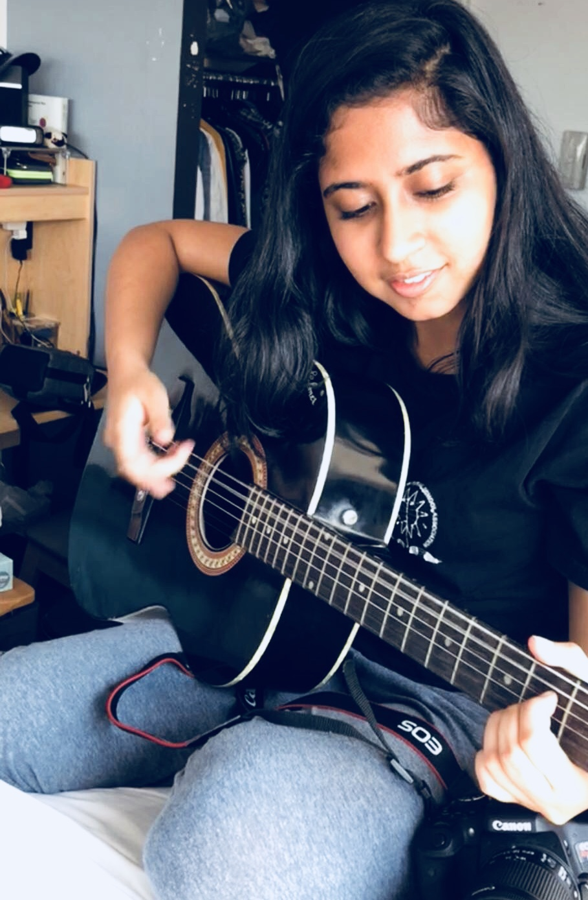

Interview with Suditi Shah
By Simran Rao
SR:What instruments do you play?
SS: So, I’ve been playing the guitar since I was 12 and um, it's been quite a journey since then.
When I started out I knew that I had an interest in music because I like to sing,
but having an instrument supporting my singing made it a whole performance by itself.
SR: What kind of guitars do you play?
SS: So, I’m more comfortable with the acoustic but I can also play the electric.
SR: How come the acoustic?
SS: I like the acoustic number one because it's handy, you don’t need to connect it to speakers.
You don’t need to mess much with the settings of the crunch and the base.
I started out with acoustic because thats what beginners start with and I like the sound of the acoustic
because thats what I like listening to over the electric. As I progressed in my academics in the guitar
I had to switch to the electric at some point because I was giving exams for Trinity.
SR: Oh? What level have you reached in Trinity?
SS: Trinity-I just reached a level four because I didn’t want to give exams after that,
then my focus would be on exams and not playing for fun. Throughout the 11th and 12th grade
I didn’t play much of it. I played it only when I wanted to. Then when I came to New York I was
like, ok I might not play it that much but I might as well take my guitar there,
what is it going to do it home? Then my roommate came up with an idea of performing at Birds Cafe.
It was a freestyle singing do-your-thing, poetry, instrument kind of event-open mic.
I played 'Valerie' by Amy Winehouse on the guitar and she sang it.
SR: What that your favorite moment playing the guitar?
SS: No, my favorite would be when I was playing at school for graduation.
I was singing my farewell songs and I played and it was very emotional.
As for New York, I still have to have more experiences.
SR: What was your favorite song to play on the guitar?
SS: 'Hero’ by Enrique Iglesias.

SR: Have you ever wanted to play any other instruments?
SS: Ok, so like every other Indian kid I started out with the keyboard.
My first keyboard was the Yamaha-I forgot the number next to it.
The first song I learned on it was 'Happy Birthday;, then 'Doe a Deer' and then 'Jana Gana Mana',
the National Anthem of India, and I somehow lost interest in the keyboard.
SR: How old were you?
SS: I was six. Thats when I realized keyboard isn’t for me, I have a different calling maybe.
SR: What songs do you usually play?
SS: I usually play pop songs that have similar repetitive cords, because that's easy to grasp on to.
If I have to learn a song it's usually via Youtube.
The pop songs have the same form chord progression which is A,G,B,F Minor and B Minor.
Most of these chords are there in pretty much every song.
The string movement it different for each of them, but the pattern it somewhat similar.
The first song I actually learned how to play was 'Boulevard of Broken Dreams' by Greenday.
Interestingly enough, what I found really hard was singing and playing at the same time.
You have to be really fluid, it has to come from the back of your head,
like you don’t have to think about the next chord. It has to be muscle movement.